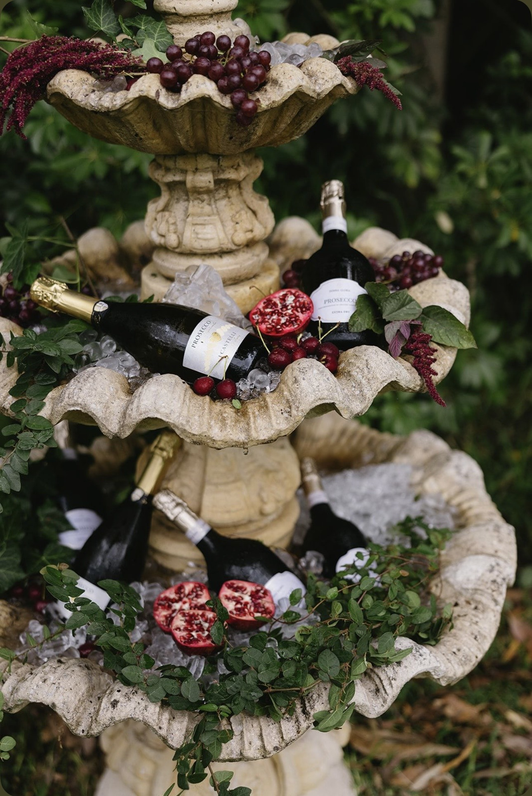
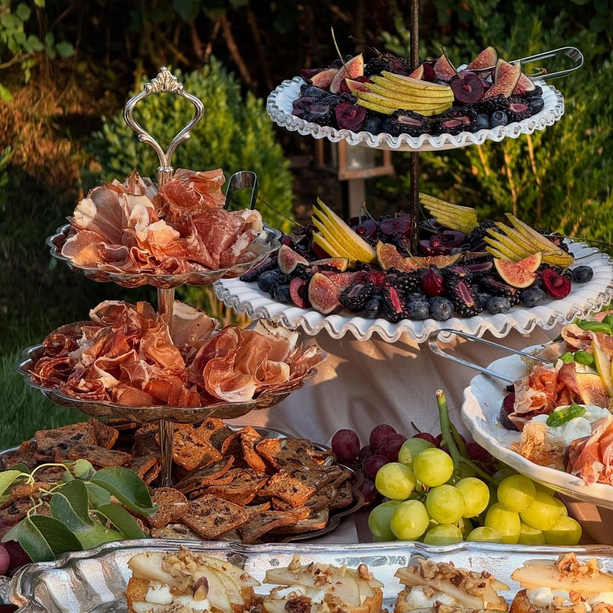

Catering
Seasonal menus, passed hors d'oeuvres, plated dinners, cocktail receptions, and custom culinary experiences.
Explore Catering →We bring together exceptional catering, refined styling, florals, rentals, and gracious hospitality under one roof. Whether you choose a single service or a fully curated event, every detail is thoughtfully coordinated.
Amor Fati Events designs gatherings that feel effortless and personal: intimate dinners, celebrations, weddings, corporate gatherings, and editorial-style hospitality moments.
Services
We combine exceptional food, refined styling, florals, rentals, and gracious hospitality into one seamless event experience.

Seasonal menus, passed hors d'oeuvres, plated dinners, cocktail receptions, and custom culinary experiences.
Explore Catering →Tablescapes, linens, candles, tabletop details, and thoughtful visual direction for every gathering.
Explore Styling →Seasonal floral arrangements, centerpieces, bud vases, and statement installations designed around your event.
Explore Florals →Curated tabletop pieces, serving ware, glassware, linens, furniture, and event accessories.
Explore Rentals →An interactive caviar stand featuring traditional accompaniments, tasting bites, and curated beverage pairings.
Explore Caviar →
About
We believe life's most meaningful moments deserve to be gathered around, celebrated, and remembered.
We believe celebrations should feel intentional, generous, and deeply personal. Our work brings together food, detail, atmosphere, and service so hosts can be fully present with their guests.
Every gathering is shaped around the occasion: the season, the table, the menu, the pace of service, and the feeling guests carry home.
Inquiry
Tell us about your date, guest count, and the kind of gathering you are imagining.